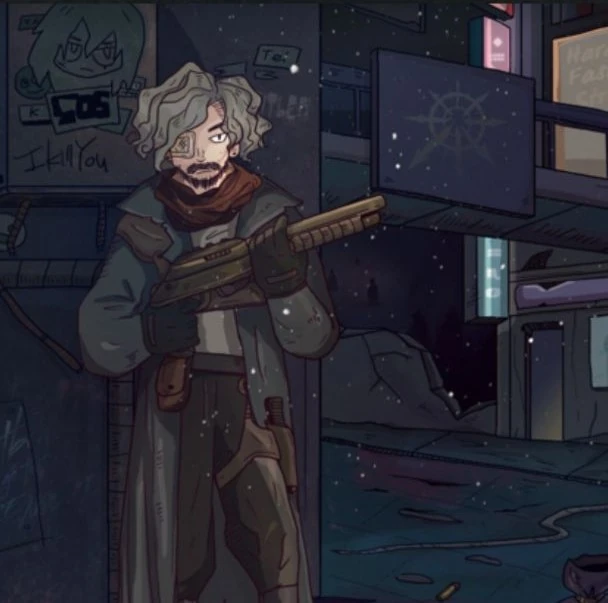
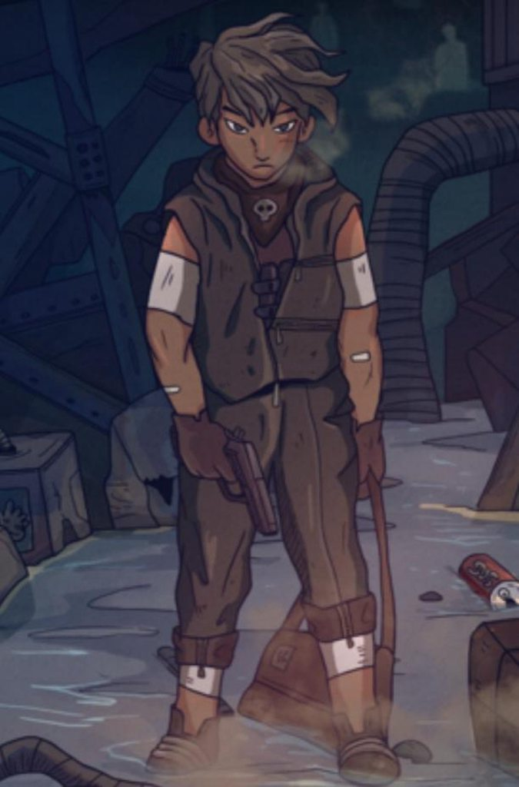
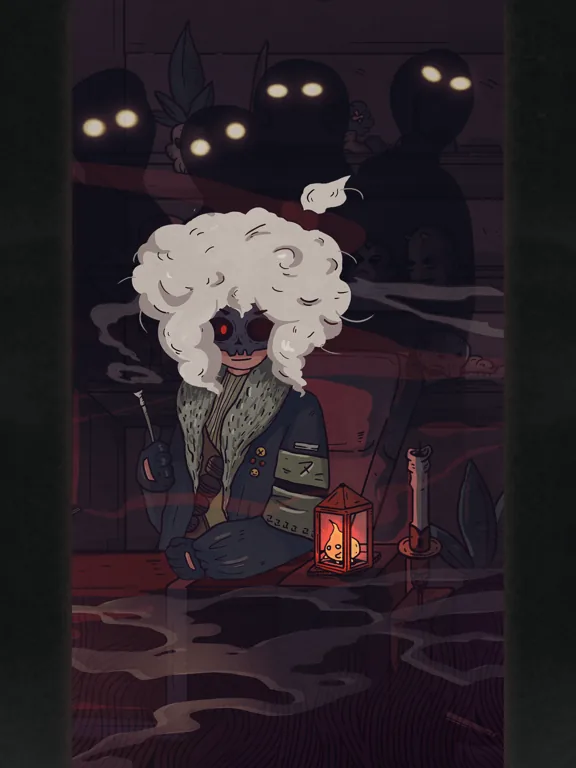

7 ДНЕЙ · НАСТАВНИК
Арго
Человек, который говорит меньше, чем делает. Его оружие не стреляет без согласия другого — и это правило важнее характера.
Selfless ShotgunВизуальный язык «7 Дней», персонажи, Лимбо, символы и задумки оформления.
Персонажи собраны через детали: оружие, маска, привычка молчать, умение быть рядом. Это не карточки героев, а способ увидеть, из чего сделана история. Ниже — разбор каждого образа.



Персонажи, Лимбо и визуальная логика финальной книги
«7 Дней» визуально отличается от первых частей не случайно. Это история о Лимбо, поэтому пространство должно ощущаться одновременно пустым, бесконечным и слишком знакомым.
Серый песок, туман, дорога, фонари, пустые дома и компас создают единый визуальный словарь. В нём почти нет ощущения нормального мира — всё выглядит как место между состояниями.
Персонажи тоже строятся через силуэты и детали. Арго запоминается оружием и сдержанностью. Баалам — улыбкой и оружием, которое почти становится частью его характера. Лина связана не с опасностью, а с человеческой уязвимостью. Харон — с маской и переходом от одной роли к другой.
Человек, который привык говорить поступками — и потому почти не нуждается в объяснениях.
В 7Days Арго — бывший военный и наставник Кирелл. Он учит её обращаться с оружием и выживать, поэтому его присутствие в истории ощущается не как обычное знакомство, а как связь, в которой одновременно есть строгость, ответственность и почти отцовская забота.
Его испытание сталкивает долг с привязанностью. Арго получает задание, которое требует от него сделать Кирелл своей целью, но личная связь с ней не позволяет воспринимать это как простую задачу. Именно в этом противоречии и раскрывается его характер: он умеет принимать тяжёлые решения, однако не перестаёт видеть в человеке человека.
Арго немногословен, спокоен и наблюдателен. Он редко объясняет свои чувства напрямую. Вместо этого они читаются в действиях, в выдержке и в том, как он относится к тем, за кого чувствует ответственность.
Его дробовик превращает внутренний конфликт Арго в правило мира: оружие не позволяет ему просто действовать по собственной воле. Для выстрела требуется согласие другого человека, поэтому сама механика оружия становится продолжением его отношения к ответственности и выбору.
Улыбка, провокация и постоянная игра словами, за которыми скрывается гораздо более серьёзный человек.
Баалам — участник испытания Харона, чьё прошлое напрямую связано с Арго. Он почти всегда первым нарушает тишину: шутит, провоцирует, флиртует и намеренно выводит людей на эмоции. За этой манерой легко принять его за человека, которому всё безразлично, но постепенно становится заметно обратное.
Его история строится вокруг желания получить второй шанс и разобраться с тем, что осталось от прошлого. Связь с Арго делает их конфликт личным, а связь с Кирелл добавляет ещё один уровень: Баалам оказывается связан с ней гораздо глубже, чем обычный участник испытания.
Баалам резкий и насмешливый, но его лёгкость — скорее способ держать дистанцию. Он способен быть внимательным, защищать других и говорить вещи, которые неприятно слышать, но невозможно полностью проигнорировать. Поэтому за внешней бравадой постепенно проступает уязвимость.
Пистолет Баалама работает по правилу, которое идеально соответствует его характеру: человек должен сам захотеть его убить. Чужая реакция становится частью механики оружия, поэтому его привычка провоцировать окружающих получает буквальное выражение внутри мира.
Человек из реальной жизни, чьё присутствие стало одной из самых личных основ этой истории.
Лина не является Кирелл под другим именем. Это девушка, которую я однажды случайно встретил в своей жизни. В период, когда мне самому было тяжело, она оказалась рядом и сделала для меня очень многое. Её помощь стала для меня не сюжетным событием, а настоящим опытом, который я позже перенёс в историю.
При этом эта связь никогда не была односторонней. Я тоже помогал Лине, когда трудности уже были на её стороне. Поэтому её образ в тетралогии строится вокруг взаимной поддержки: два человека могут быть опорой друг для друга, меняться местами и просто оставаться рядом тогда, когда никаких правильных слов уже не хватает.
По эмоциональному ощущению Лина ближе к Хильде из 7Days, чем к Кирелл. Но Хильда здесь не является её прототипом, хоть и они во многом похожи, как минимум в том что обе умеют писать стихи. И говоря об этом, не могу не упомянуть что стихотворение представленное в моей истории было написанно именно Линой для меня, огромное ей спасибо за это. Так же их объединяет ощущение тёплого, живого присутствия человека, которому можно довериться.
Главная особенность Лины — отсутствие одностороннего спасения. Она помогла мне в тяжёлый момент, а позже я помогал ей. Поэтому её образ строится не вокруг роли «того, кого нужно спасти», а вокруг отношений, в которых помощь может идти в обе стороны.
Проводник между смертью и возможностью вернуться — и образ, через который история говорит о выборе.
В 7Days Харон встречает Кирелл в пространстве между жизнью и смертью и предлагает ей шанс вернуться. Он становится организатором испытания, в котором каждый участник получает собственное задание, а отношения между людьми постепенно оказываются не менее важны, чем сама цель.
Харон намеренно остаётся загадочным. Его прошлое раскрывается постепенно, а история показывает, что роль проводника не обязательно является конечной точкой. За ней может скрываться человек, который когда-то сам оказался внутри подобного испытания.
Именно поэтому Харон воспринимается не только как персонаж, но и как символ перехода. Он стоит между двумя состояниями и наблюдает за тем, как другие принимают решения, от которых зависит их дальнейшая судьба.
Маска подчёркивает изменчивость Харона: перед разными людьми он может выглядеть по-разному, но его функция остаётся одной — проводить человека через границу между смертью, выбором и возможностью начать заново.